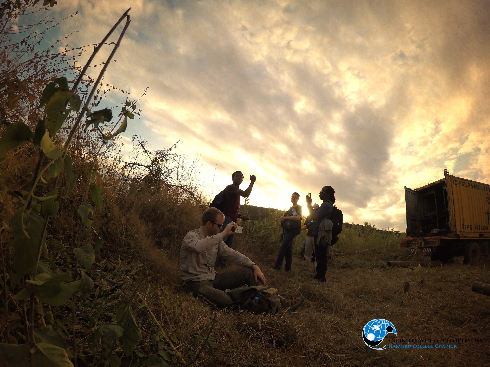

Latest News
|
April 17, 2017
Update on Nectar GrantGrants received by the chapter are distributed between the chapter’s two current projects. For this calendar year, we have received grants from the following sponsors:
The chapter seeks to raise a total of $ 63,075 to facilitate implementation trips to Los Sanchez, Dominican Republic and Mkutani, Tanzania this coming summer 2017. To donate and support these projects, please click here. Also, please see our sponsorship packet(pdf) below: Download Sponsorshop Packet |
|
March 29, 2017
Project Update- The Mkutani TeamThe Mkutani team submitted their latrine and teacher housing pre-tip implementation plans along with their construction safety plan! Over 150 pages of Mkutani content is now under EWB-USA review. |
|
February 28, 2017  Acknowledgement - EWB Grants and Fundraisers.Grants received by the chapter are distributed between the chapter’s two current projects. Thus far, the chapter’s main source of revenue has been grants from Harvard University. This year, they have strengthened their relationship with larger funding sources like the Harvard John A. Paulson School of Engineering and Applied Sciences, the Phillips Brooks House Center for Public Service and Engaged Scholarship, and the Harvard Global Health Institute. They have been awarded one $8,000 and one $4,000 grant from the Harvard John A. Paulson School of Engineering and Applied Sciences, and $5,000 from the Harvard Office for Sustainability. In addition, they have raised $8,615 during a winter fundraiser.The chapter plans to continue to apply for grants and pursue several corporate sponsorships with companies in the Boston area. They have assembled a sponsorship package to expose businesses to the project and encourage them to donate. Possible corporate sponsors include Consigli Construction and Elaine Construction, leading construction and construction management companies. The chapter’s outreach centers around construction companies because the common engineering experiences they share with the chapter assist in the development of a robust relationship and enable in-kind donations. Additionally, a relationship with the David Rockefeller Center for Latin American Studies at Harvard University is being pursued as the center has shown interest in the Los Sanchez project. |
|
February 26, 2017
EWB Club update- New Board Appointed!PresidentsDesignation: Board Appointed: Eshaan Patheria and Victor Yang E-mail: epatheria@college.harvard.edu; vyang@college.harvard.edu
Director of Programming
Director of Fundraising
Treasurer
Director of Human Resources
Director of Media
Director of Grants
Director of Sponsorship The Committee members:
|
|
February 22, 2017
Project Update- The Los Sanchez Team TeamThe Los Sanchez project has had a busy semester preparing for their upcoming construction trip in August. So far this year, they have finished a detailed analysis of possible designs for the water system. Some options that were considered included building another tank and using additional water sources to minimize piping costs and head loss do to long sections of piping. This analysis was submitted to EWB National and recently approved!Now the chapter is finalizing the the details of the chosen design. They have completed models for a new well housing, a new valve box, and numerous tap stands. In addition, the team has used both excel and WaterGEMS to design a functional piping system that delivers water to the entire community! The design has been submitted to EWB national and the chapter is anxiously waiting for approval! Stay tuned for updates on our continued progress! |
|
March 11, 2016 Project Update - Los Sanchez, DRThe local government has started constructing a new water tank for Los Sanchez! We are in close touch with the community leaders, and the construction is coming along well. Our project's main focus will be the piping system to distribute water from this tank to the houses in the community. |